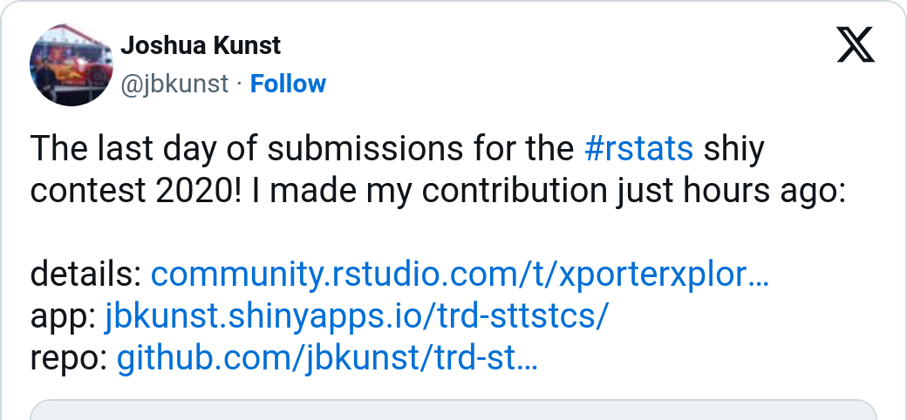

Post updated on Dec 23, 2022
Introducction
When you create a dashboard to track some information is usual put the important numbers big and clear at the beginning of the main section. For this, {shinydashboard} (https://rstudio.github.io/shinydashboard/) and other dashboard oriented packages for shiny like {bs4dash}, {argonDash}, {tablerDash} - all from https://rinterface.com/ - have an implementation to put this type of information know as a card or value box.
In some projects like https://jbkunst.shinyapps.io/trd-sttstcs/ I’ve implemented a modification of the original shinydashboard::valueBox to complement the information (the BIG number) with a sparkline. Always that implementation lives as a function in R/helpers.R script, so this will be a good opportunity to share the code, thoughts and ideas.

The basic valueBox
Let’s start with what we know: The most direct and simple implementation of a valueBox in {shinydashboard}.
Code
library(shiny)
library(shinydashboard)
vb <- valueBox(
value = "1,345",
subtitle = "Lines of code written",
icon = icon("code"),
width = 4,
color = "red",
href = NULL)
ui <- dashboardPage(
dashboardHeader(),
dashboardSidebar(disable = TRUE),
dashboardBody(
fluidRow(
valueBoxOutput("vbox")
)
)
)
server <- function(input, output) {
output$vbox <- renderValueBox(vb)
}
# shiny::shinyApp(ui, server, options = list(launch.browser = .rs.invokeShinyPaneViewer))This app looks like:

So here it is, a simple value box to emphasize information which can have an icon/color to give some meaning to the number.

Modifying the valueBox
Before to modify a value box we need to know what a valueBox is, or how is it built, so take a look what is inside this funcion.
Code
valueBox
function(value, subtitle, icon = NULL, color = "aqua", width = 4, href = NULL){
validateColor(color)
if (!is.null(icon))
tagAssert(icon, type = "i")
boxContent <- div(
class = paste0("small-box bg-", color),
div(
class = "inner",
h3(value),
p(subtitle)
),
if (!is.null(icon)) div(class = "icon-large", icon)
)
if (!is.null(href))
boxContent <- a(href = href, boxContent)
div(
class = if (!is.null(width)) paste0("col-sm-", width),
boxContent
)
}As we see, the value and subtitle arguments are the main ones. The other are just for styling and format. These elements are in div(class = "inner", ...) so here we’ll put the new content.
Let’s try to put a title in the top of the div and then use the subtitle as an detailed text.
Code
valueBox2 <- function(value, title, subtitle, icon = NULL, color = "aqua", width = 4, href = NULL){
shinydashboard:::validateColor(color)
if (!is.null(icon))
shinydashboard:::tagAssert(icon, type = "i")
boxContent <- div(
class = paste0("small-box bg-", color),
div(
class = "inner",
tags$small(title),
h3(value),
p(subtitle)
),
if (!is.null(icon)) div(class = "icon-large", icon)
)
if (!is.null(href))
boxContent <- a(href = href, boxContent)
div(
class = if (!is.null(width)) paste0("col-sm-", width),
boxContent
)
}So the implementation is the same as the original valueBox function:
The idea of put a title is to help the reader, but we use a small text to be subtle, usually I like to use a Small Caps font but in this case I used uppercase for simplicity.
Adding sparklines
The idea to add a sparkline to the value box is give more information. For example, if your have a historical data, it would be good put a sparkline to show the previous behaviour about the data, so you can compare the BIG number with the past.
Let’s simulate data to create a sparkline:
Code
x y
1 2022-12-03 98
2 2022-12-04 102
3 2022-12-05 251
4 2022-12-06 302
5 2022-12-07 343
6 2022-12-08 700
7 2022-12-09 815
8 2022-12-10 609
9 2022-12-11 498
10 2022-12-12 495
11 2022-12-13 744
12 2022-12-14 860
13 2022-12-15 1020
14 2022-12-16 1055
15 2022-12-17 1000
16 2022-12-18 1378
17 2022-12-19 1490
18 2022-12-20 1172
19 2022-12-21 1402
20 2022-12-22 1345Let’s create a sparkline with {highcharter} package:
Code
We have our first sparkline. It’s important note the hc object will use the available horizontal (width) space, but we need to control the heigth.
Now we can create a new valueBox function;
Code
valueBox3 <- function(value, title, sparkobj = NULL, subtitle, icon = NULL,
color = "aqua", width = 4, href = NULL){
shinydashboard:::validateColor(color)
if (!is.null(icon))
shinydashboard:::tagAssert(icon, type = "i")
boxContent <- div(
class = paste0("small-box bg-", color),
div(
class = "inner",
tags$small(title),
h3(value),
if (!is.null(sparkobj)) sparkobj,
p(subtitle)
),
if (!is.null(icon)) div(class = "icon-large", icon, style = "z-index; 0")
)
if (!is.null(href))
boxContent <- a(href = href, boxContent)
div(
class = if (!is.null(width)) paste0("col-sm-", width),
boxContent
)
}So now:
And the result is:

LOL! We need modify the look of the chart. For this we’ll create a custom theme. The general idea is gain space via removing axis and borders. Then have cleaner look removing grid lines… You know, show just the line.
Code
hc_theme_sparkline_vb <- function(...) {
theme <- list(
chart = list(
backgroundColor = NULL,
margins = c(0, 0, 0, 0),
spacingTop = 0,
spacingRight = 0,
spacingBottom = 0,
spacingLeft = 0,
plotBorderWidth = 0,
borderWidth = 0,
style = list(overflow = "visible")
),
xAxis = list(
visible = FALSE,
endOnTick = FALSE,
startOnTick = FALSE
),
yAxis = list(
visible = FALSE,
endOnTick = FALSE,
startOnTick = FALSE
),
tooltip = list(
outside = FALSE,
shadow = FALSE,
borderColor = "transparent",
botderWidth = 0,
backgroundColor = "transparent",
style = list(textOutline = "5px white")
),
plotOptions = list(
series = list(
marker = list(enabled = FALSE),
lineWidth = 2,
shadow = FALSE,
fillOpacity = 0.25,
color = "#FFFFFFBF",
fillColor = list(
linearGradient = list(x1 = 0, y1 = 1, x2 = 0, y2 = 0),
stops = list(
list(0.00, "#FFFFFF00"),
list(0.50, "#FFFFFF7F"),
list(1.00, "#FFFFFFFF")
)
)
)
),
credits = list(
enabled = FALSE,
text = ""
)
)
theme <- structure(theme, class = "hc_theme")
if (length(list(...)) > 0) {
theme <- hc_theme_merge(
theme,
hc_theme(...)
)
}
theme
}Testing the theme.
Code
hc <- hc %>%
hc_add_theme(hc_theme_sparkline_vb()) %>%
hc_credits(enabled = FALSE)
hc %>%
# emulate the background color of the valueBox
hc_chart(backgroundColor = "#DD4B39")And trying again:
Including an information helper
Sometimes I like to add helper information icon to explain how to read the metric/number if is needed.
This can be done using the icon "info-cirle" and using the class "pull-right" to put in the corner.
Code
valueBox4 <- function(value, title, sparkobj = NULL, subtitle, info = NULL,
icon = NULL, color = "aqua", width = 4, href = NULL){
shinydashboard:::validateColor(color)
if (!is.null(icon))
shinydashboard:::tagAssert(icon, type = "i")
info_icon <- tags$small(
tags$i(
class = "fa fa-info-circle fa-lg",
title = info,
`data-toggle` = "tooltip",
style = "color: rgba(255, 255, 255, 0.75);"
),
class = "pull-right"
)
boxContent <- div(
class = paste0("small-box bg-", color),
div(
class = "inner",
tags$small(title),
if (!is.null(sparkobj)) info_icon,
h3(value),
if (!is.null(sparkobj)) sparkobj,
p(subtitle)
),
if (!is.null(icon)) div(class = "icon-large", icon, style = "z-index; 0")
)
if (!is.null(href))
boxContent <- a(href = href, boxContent)
div(
class = if (!is.null(width)) paste0("col-sm-", width),
boxContent
)
}So now:

Voilà we have a value box with a information helper.
Demo
Demo section! We can use other types of charts, texts and colors:
Before the demo, let’s give a proper name to our function:
Code
valueBoxSpark <- function(value, title, sparkobj = NULL, subtitle, info = NULL,
icon = NULL, color = "aqua", width = 4, href = NULL){
shinydashboard:::validateColor(color)
if (!is.null(icon))
shinydashboard:::tagAssert(icon, type = "i")
info_icon <- tags$small(
tags$i(
class = "fa fa-info-circle fa-lg",
title = info,
`data-toggle` = "tooltip",
style = "color: rgba(255, 255, 255, 0.75);"
),
# bs3 pull-right
# bs4 float-right
class = "pull-right float-right"
)
boxContent <- div(
class = paste0("small-box bg-", color),
div(
class = "inner",
tags$small(title),
if (!is.null(sparkobj)) info_icon,
h3(value),
if (!is.null(sparkobj)) sparkobj,
p(subtitle)
),
# bs3 icon-large
# bs4 icon
if (!is.null(icon)) div(class = "icon-large icon", icon, style = "z-index; 0")
)
if (!is.null(href))
boxContent <- a(href = href, boxContent)
div(
class = if (!is.null(width)) paste0("col-sm-", width),
boxContent
)
}Some charts:
Code
hc <- hchart(df, "area", hcaes(x, y), name = "lines of code") %>%
hc_size(height = 100) %>%
hc_credits(enabled = FALSE) %>%
hc_add_theme(hc_theme_sparkline_vb())
hc2 <- hchart(df, "line", hcaes(x, y), name = "Distance") %>%
hc_size(height = 100) %>%
hc_credits(enabled = FALSE) %>%
hc_add_theme(hc_theme_sparkline_vb())
hc3 <- hchart(df, "column", hcaes(x, y), name = "Daily amount") %>%
hc_size(height = 100) %>%
hc_credits(enabled = FALSE) %>%
hc_add_theme(hc_theme_sparkline_vb()) Some value boxes:
Code
vb <- valueBoxSpark(
value = "1,345",
title = toupper("Lines of code written"),
sparkobj = hc,
subtitle = tagList(HTML("↑"), "25% Since last day"),
info = "This is the lines of code I've written in the past 20 days! That's a lot, right?",
icon = icon("code"),
width = 4,
color = "teal",
href = NULL
)
vb2 <- valueBoxSpark(
value = "1,345 KM",
title = toupper("Distance Traveled"),
sparkobj = hc2,
subtitle = tagList(HTML("↑"), "25% Since last month"),
info = "This is the lines of code I've written in the past 20 days! That's a lot, right?",
icon = icon("plane"),
width = 4,
color = "red",
href = NULL
)
vb3 <- valueBoxSpark(
value = "1,3 Hrs.",
title = toupper("Thinking time"),
sparkobj = hc3,
subtitle = tagList(HTML("↑"), "5% Since last year"),
info = "This is the lines of code I've written in the past 20 days! That's a lot, right?",
icon = icon("hourglass-half"),
width = 4,
color = "yellow",
href = NULL
)Finally the app:
Code
library(shiny)
library(shinydashboard)
ui <- dashboardPage(
dashboardHeader(),
dashboardSidebar(disable = TRUE),
dashboardBody(
fluidRow(
valueBoxOutput("vbox"),
valueBoxOutput("vbox2"),
valueBoxOutput("vbox3")
)
)
)
server <- function(input, output) {
output$vbox <- renderValueBox(vb)
output$vbox2 <- renderValueBox(vb2)
output$vbox3 <- renderValueBox(vb3)
}
# shiny::shinyApp(ui, server, options = list(launch.browser = .rs.invokeShinyPaneViewer))This app look like this :)! What do you think?

Extending the idea
Due the {bs4dash} package is based in the same template of the {shinydashboard} https://github.com/ColorlibHQ/AdminLTE is direct use the functions. There some details in the info icon, but you can remove it if you use icon = NULL.
Code
library(bs4Dash)
ui <- bs4DashPage(
header = dashboardHeader(),
sidebar = bs4DashSidebar(disable = TRUE),
body = bs4DashBody(
# this is for use tooltips in the bs4dash package
tags$script(HTML("setInterval(function(){ $('[title]').tooltip(); }, 1000)")),
tags$h2("Testing with {bs4dash} package"),
tags$hr(),
fluidRow(
valueBoxOutput("vbox"),
valueBoxOutput("vbox2"),
valueBoxOutput("vbox3")
)
)
)
# setTimeout(function(){ $('[title]').tooltip(); }, 3000)
# setInterval(function(){ $('[title]').tooltip(); }, 3000)
# JS("$(function () { $('[title]').tooltip() })")This walkthrough/tutorial will help to implement sparklines in other packages as well as other elements such as infoBox, or maybe with other htmlwidgets like {echarts4r} or {plotly}. So if you make an implementation please tell us and share with other people.
Reuse
Citation
@online{kunstfuentes2020,
author = {Joshua Kunst Fuentes},
title = {valueBoxes and {Sparklines}},
date = {2020-06-29},
url = {https://jkunst.com/blog/posts/2020-06-26-valuebox-and-sparklines},
langid = {en}
}